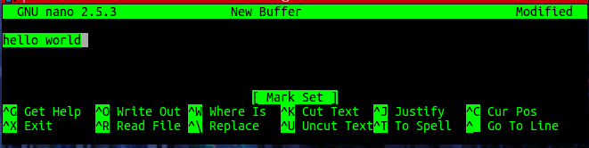
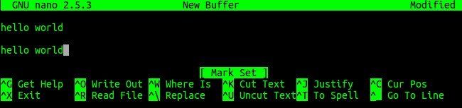

# Linux - Tools/Software - nano
CTRL+k - delete line
## How to copy/paste text
https://askubuntu.com/questions/833102/copy-only-copy-not-cutting-in-nano1. Position the cursor at the beginning of the character from which you want to copy.
Press Alt+Shift+A to set mark. ( Alternatively, set mark with Ctrl+6 )
2. Use arrow keys to highlight the text to copy.
3. Use Alt+Shift+6 to copy (Alternatively, Alt + 6 )
4. Navigate to the place you want to paste. Release paste with Ctrl+U
